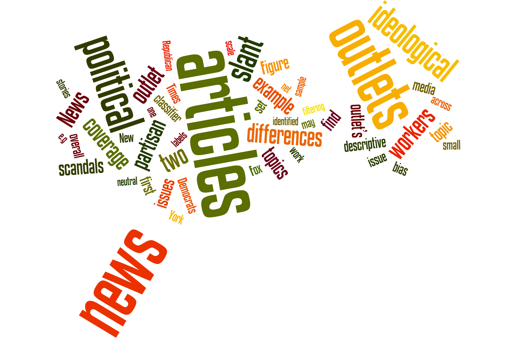
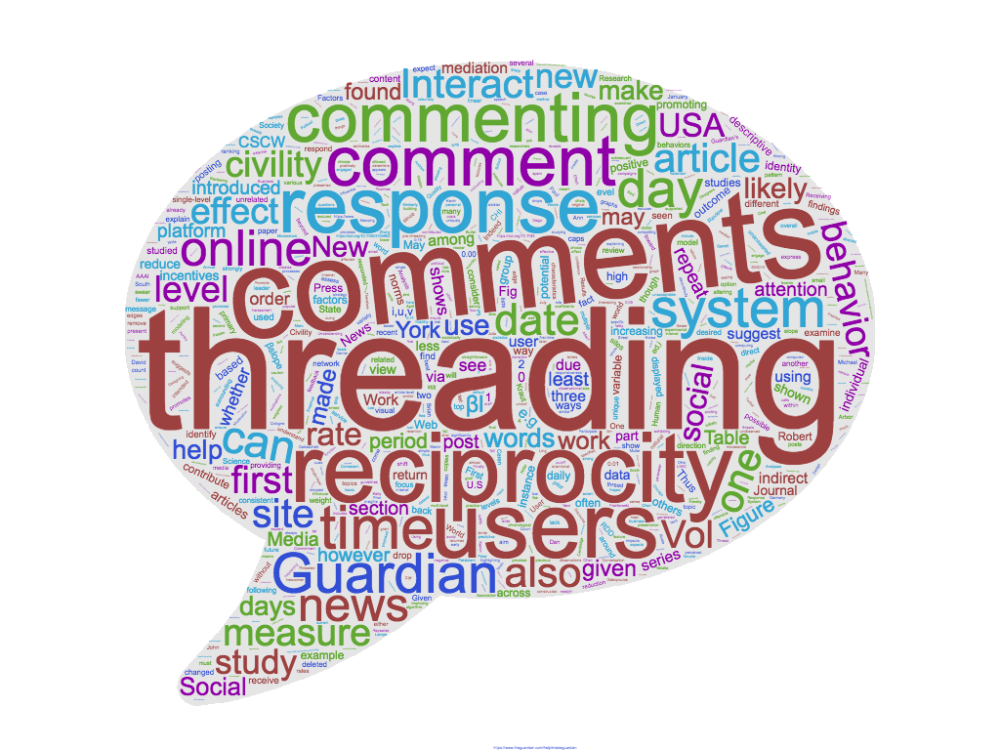
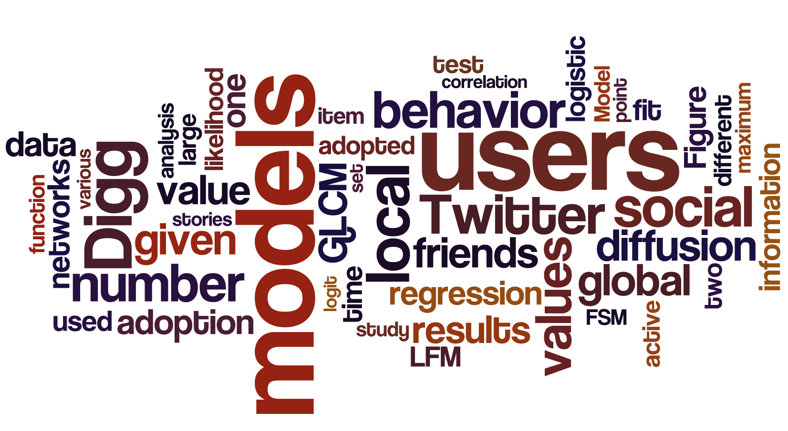

News Media Production & Consumption

News media are a key source of information for society.
How is this source of information produced and how is it consumed?
Are news outlets biased? Do readers prefer ideologically biased content?
In a recent work, we examined issue filtering and ideological framing in U.S. news media.
Through the use of supervised learning and crowdsourcing techniques,
we constructed a representative sample of politically relevant news coverage
with ideological position broken down by issue. Our technique not only provides
an unbiased ordering of outlets according to their political slant, but also discovers
how ideological filtering and framing contribute to the overall ideological position.
We are currently extending this work to examine how ideological bias on news outlets
change over time in comparison to public opinion polls. The spread of fake news online
is raising serious concerns. We are working on a number of projects to model and
quantify such behavior. One example is here. In this paper, we examined the spread
of fake news leading up to the 2016 U.S. Presidential elections.
In an upcoming book project, we examine how the news media covered the extraordinary
2016 election, how people reacted to it on social media platforms,
and what stuck with the voters. This book is scheduled to be released January 2020.
Social Movements & Media
Studies of social movements have traditionally relied on ethnographic methods to
learn about the motives and attitudes of participants. These methods are powerful but
they also have certain limitations. For instance, they generally sample only active
participants and are therefore unable to draw objective comparisons with non-participants.
Also, by construction participants can only be observed or interviewed after the movement
has begun; hence objective comparisons with preexisting beliefs and attitudes are difficult.
Can we use social media data to fill this gap and use these non-representative noisy data to
perform causal inference in the context of social movements? We claim the answer is yes.
And here is a short explanation as to why this is the case: 1) the "always on" nature of
social media platforms allows researchers to construct ex-post panels even years after the
events of interest have taken place, and this is of particular importance in the case of
political uprisings that are hard to foresee. 2) They allow for easy sampling of the "right"
set of non-participants (control group) to perform comparisons with. 3) The amount of data
available is impressive and goes well beyond what can be extracted with a short survey or
interview. 4) Information extracted goes beyond individuals and captures organizational
structure and network of participants.Examples studies: In our recent work we introduced a
new methodology for quantifying how a movement changes the attitudes and behavior of its
participants. In another recent paper, we investigated the value of slacktivists for social
movements. We are currently working on determining the value of Social Movement Organizations(SMOs)
in online protest movements (a working paper is available here), measuring stickiness of
activism and identifying the most (and least) successful recruitment methods.
We are also working on new mathematical models of collective action that incorporate
the new findings from our data-driven studies.
Measuring and Promoting the Quality of Online Discussions

The National Science Foundation has funded our collaborative research project,
Measuring and Promoting the Quality of Online News Discussions?.
The project is a joint effort between researchers at the University of Michigan
School of Information (Paul Resnick) and the Ohio State University School of
Communication (R. Kelly Garrett).This project will amplify the efforts of people
to bring out the best in other people in online conversations, and will make it easier
for people to find high quality online conversations. The first goal of the research is
to create automated classifiers to measure the quality of everyday online political talk.
Classifiers will estimate the quality of online conversations about news articles in public
venues such as Twitter, Facebook, Reddit, and the comments sections of news pages.
A Conversation Finder tool (a website and a browser extension) will use the automated
classifiers to recommend, in real time, venues where particular news articles are being
discussed and where the quality scores are high. The second goal of the research is to
create a Conversation Coach that helps the general public to improve the quality of
conversation spaces they participate in, by helping them craft messages that directly
contribute to quality and that indirectly inspire others. It will include a Message Assistant
that extracts elements from conversations in order to help people craft messages and a Message
Impact Assessor that predicts the likely impact of a draft message on the quality metrics for
subsequent conversations. Example study: When news forums first came to being, scholars hoped
that they would create an era of reader engagement and deliberation. Those hopes have only been
partially fulfilled. Many news forums today are known for incivility and an aggressively
adversarial tone. That drives out participants who would otherwise engage in
constructive discussion, and can adversely affect readers' understanding of the news.
This has led a number of news organizations in the US to shut down their commenting sites,
while others, such as The Guardian, have sought to improve online comments.
In 2012 the news organization introduced single-level threading to its commenting system,
providing a unique opportunity to examine the influence of that design feature.
In a recent paper, we studied this naturally occurring experiment to investigate
the impact of conversation threading on user retention as mediated by several
potential changes in conversation structure and style and provided an array of
recommendations for designers of news commenting sites.
Social Networks

The power of online social networks lies in their ability to enable the diffusion of
information, ideas, and innovations. This significance motivates our work that focuses
on understanding the diffusion process, and using this understanding to build
technological solutions to facilitate and guide such spread. Our efforts advanced the
state-of-the-art in various areas listed below:
Understanding Diffusion: Most research on modeling diffusion focuses solely on the
influence of friends and assumes that users are either unaware of or not interested
in activity happening outside their ego network. Our work challenges this unrealistic
assumption. Our approach produced a cross-models, cross-networks and cross-metrics
evaluation framework which takes a strong first step towards attaining reproducibility
and testing generalizability in modeling social behavior.
Managing Diffusion: The open nature of online social networks leaves their users
vulnerable to the spread of misinformation with possibly devastating implications.
Clearly, it is vital to investigate effective methods to limit the spread of misinformation
to avoid such societal effects. Our work was the first study to focus on optimally
managing the spread of misinformation in online social networks.
Reporting Diffusion: Information trends in online social networks reveal societal needs,
fears or interests. They can also help users stay on top of news without having to sift
through vast amounts of shared information. We introduced a number of methods
(example study 1, example study 2) that improve the state-of-the-art in this area.
Group Dynamics: In Bowling Alone: The Collapse and Revival of American Community,
Robert D. Putnam discusses how we are fast becoming disconnected from family, friends,
and our democratic structures. Online groups present a possible remedy here.
But most online groups are short-lived given their inability to sustain members.
So, what makes people stick? Can we predict it? For more, go here.